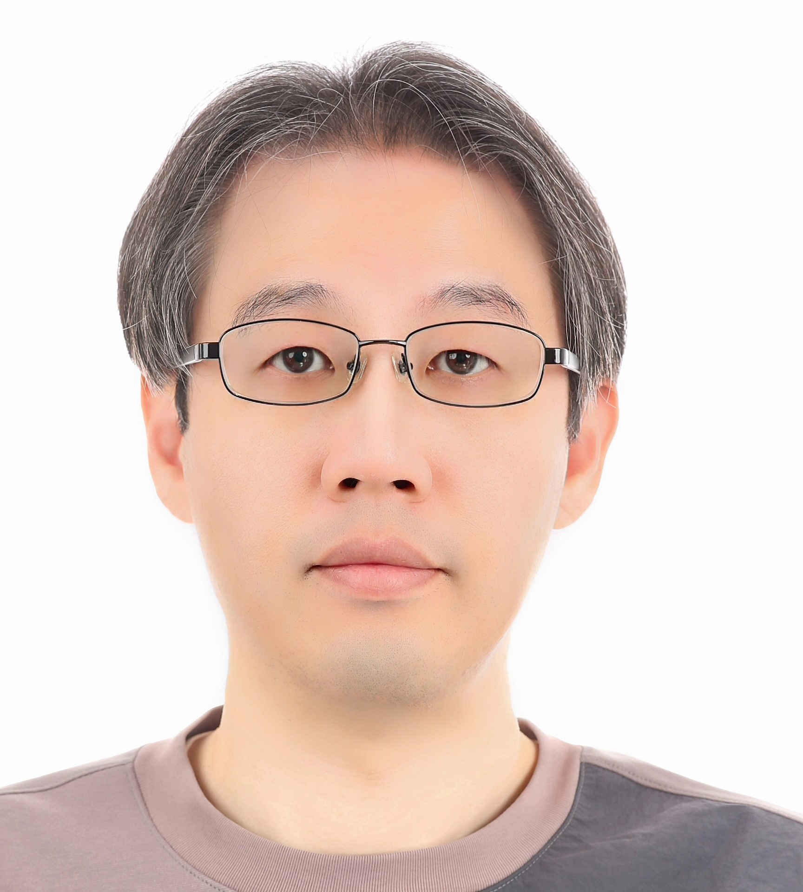

The 5th International Workshop on
High Performance Chiplet and Interconnect Architectures (HiPChips)
Co-located with MICRO 2025 at Seoul, South Korea
October 19th, 2025

(Courtesy Meta AI)
Architecture:
Software and Ecosystem:
Contact us at hipchips2023@gmail.com for questions or any other information.
 Chester Park, Konkuk University
Chester Park, Konkuk University
Dr. Chester Park is a Professor in the Department of Electrical and Electronics Engineering, Konkuk University, South Korea,
where he is currently working on algorithm and architecture co-optimizations using virtual platform based system simulations.
In particular, he has been developing a new system simulator, NetTLMSim, that facilitates the system-level optimizations of
heterogeneous chiplet system dataflow. Before joining academia, he was with Samsung Electronics, Giheung, South Korea, and
Ericsson Research, CA. He received the Ph.D. degree in electrical engineering from the Korea Advanced Institute of Science and Technology (KAIST), Daejeon, South Korea.
 Weifeng Zhang, Lenovo Research
Weifeng Zhang, Lenovo Research
Dr. Weifeng Zhang is Corporate VP of Lenovo Group and the Director of Intelligent Computing Lab at Lenovo Research.
He currently serves as the Chair of the AI Co-Design Workgroup at the Open Compute Project Foundation (OCP) and
the Program Committee for the OCP Future Technology Symposiums (AI/HPC track). Prior to joining Lenovo, Weifeng was the
Chief Architect and VP of Software at Lightelligence Inc for system architecture, hardware software co-design, and
software ecosystem to empower optical computing and optical interconnect technologies. Before Lightelligence, Weifeng
was a fellow of Alibaba Group and the Chief Scientist of Heterogeneous Computing at Alibaba Cloud Infrastructure.
He was also a founding member of the Board of Directors at MLCommons (MLPerf™). Weifeng received his PhD in
Computer Science from the University of California, San Diego (UCSD).
 Dharmesh Jani, Meta Platforms
Dharmesh Jani, Meta Platforms
Dharmesh Jani (‘DJ’) is Director at Meta leading the Infrastructure Technology Ecosystem and Partnerships and has been
an active member of OCP since 2012. He is also co-chair of the OCP Incubation Committee where he started the OCP strategic
initiatives, launched multiple projects such as Sustainability, Open Systems for AI and is a founding member of the Board
of Directors for UCIe consortium as well as UALink. Prior to Meta, he worked in Fortune 500 companies leading product
development as well as in startups building zero to one businesses. He has a BTech from IIT-Bombay, an MSEE from UCLA, and an MBA from UC-Berkeley (Haas).
 |
Dr. Fitzgerald Sungkyung Park, Professor, Pusan National University Fitzgerald Sungkyung Park took his Ph.D. degree in electronics engineering from Seoul National University, Korea. He worked for Samsung Electronics, Electronics and Telecommunications Research Institute (ETRI), and Ericsson, Inc., USA, where he developed circuits for various transceivers. After joining Pusan National University, his research interests include design and modeling of SoCs with hardware accelerators, and development of virtual platforms for artificial intelligence and wireless communication. |

|
Dr. Debendra Das Sharma, Sr Fellow, Intel Dr. Debendra Das Sharma is an Intel Senior Fellow at Intel Corporation, responsible for I/O Technologies and Standards. He has been driving PCI-Express, CXL, and UCIe standards across the industry since their inception. He holds more than 220 US patents and 500 patents world-wide. He has been awarded the Distinguished Alumnus Award from IIT, Kharagpur, the 2021 IEEE Region 6 Outstanding Engineer Award, the first PCI-SIG Lifetime Contribution Award, the 2022 IEEE Circuits and Systems Industrial Pioneer Award, and the 2024 IEEE Computer Society Edward J. McCluskey Technical Achievement Award. |
|
Dr. Chixiao Chen, Associate Professor, Fudan University Chixiao Chen is an associate professor at Fudan University, Shanghai, China. He servers as the director of Chiplet Innovation Center of the State Key Laboratory of Integral Chips at Fundan. He has served as a TPC member of ASSCC since 2022 and outstanding reviewer of IEEE SSCL society. He was the co-awardee of ASSCC 2024 Distinguished Design Award. His research interests include mixed-signal integrated circuit design, intelligent computing circuits & systems, and 2.5D/3D/3.5D integration technology. Chixiao received his BSc and PhD degrees in microelectronics from Fudan University in 2010 and 2016 respectively. He was a post doc research associate with Univeristy of Washtington, Seattle from 2016 to 2018. |
|
|
Dr. Gabriel Loh, Senior Fellow, AMD Gabriel H. Loh is a Senior Fellow in AMD Research and Advanced Development at Advanced Micro Devices, Inc. Gabe received his Ph.D. and M.S. in computer science from Yale University in 2002 and 1999, respectively, and his B.Eng. in electrical engineering from the Cooper Union in 1998. Gabe was also a tenured associate professor in the College of Computing at the Georgia Institute of Technology, a visiting researcher at Microsoft Research, and a senior researcher at Intel Corporation. He is a Fellow of the ACM and IEEE, recipient of ACM SIGARCH's Maurice Wilkes Award, Hall of Fame member for the MICRO, ISCA, and HPCA conferences, and (co-)inventor on over one hundred US patents. |
|
 |
Dr. Arindam Mallik , Department Director, IMEC Arindam Mallik leads Compute System Architecture (CSA) department at imec. He is a technologist enabling HW-SW co-design at the cross-point of AI algorithms, computer architecture, and novel technology solutions. Arindam has spent the past 20 years pushing the boundaries of technology research to provide novel solutions with a direct impact on the semiconductor industry. He has authored or co-authored more than 100 papers in international journals, conference proceedings, and holds number of relevant patents. He received M.S. and PhD degree in Electrical Engineering and Computer Science from Northwestern University, USA in 2004 and 2008, respectively. |
|
Dr. Kaisheng Ma, Associate Professor, Tsinghua University Kaisheng is an Associate Professor in Institute for Interdisciplinary Information Sciences (IIIS), Tsinghua University. He received his Ph.D. in Computer Science and Engineering at the Pennsylvania State University. His research focuses on Robust and Efficient AI Algorithms, Post-Moore Architecture, and High-Performance Chips. Dr. Ma has published more than 50 papers on top conferences including NeurIPS, ICCV, AAAI, CVPR, ISCA, ASPLOS, MICRO, HPCA, DAC etc. He has won many awards and honors, including 2024 HPCA Distinguished Artifact Award (1/410), 2022 CCF Integrated Circuit Early Career Award, 2020 Springer Nature Research Highlights from China Collection Award, 2017 ASP-DAC Best Paper Award, 2016 IEEE MICRO Top Picks, 2015 HPCA Best Paper Award, etc. |
|
|  |
Dr. Minsoon Hwang, SoC Architect, SK hynix Minsoon is a SoC Architect at SK hynix, researching the future memory and storage solutions. He is interested in analog and mixed signal circuit design, high speed interface, chiplet, and memory & storage architecture such DRAM, NAND flash, and new memories. He worked about 20 years in the field of solid state circuit design such as display, CMOS image sensor, RF transceiver and DRAM/NAND Flash solutions and CDMA communication systems for LG Electronics and SK hynix. He received his Ph.D. degree in electrical and computer engineering from University of Florida, Gainesville. |
|
Anu Ramamurthy, Associate Fellow, Microchip Anu has been working in the semiconductor industry for over 25 years in various engineering roles. She is an Associate Fellow, Design at Microchip Technology with a focus on R&D and pathfinding. She is currently working in the area of advanced packaging, heterogeneous integration and chiplet design. She is also the co-lead of the Open Chiplet Economy (OCE) subgroup of the Open Compute Project (OCP). Anu is also very interested in mentoring women in engineering, has been part of the TechWomen program run by the U.S State department and actively involved in the mentoring programs at Microchip. |
|
|
Dr. Kyoungmin Lee, System Architect, Samsung S.LSI Dr. Kyoungmin Lee is a System Architect at Samsung S.LSI. He has over 19 years of experience at Samsung S.LSI, where he has developed numerous commercially successful SOC products. His recent work focuses on chiplet architectures using advanced package technology to create innovative platform technologies that address the inherent limitations of traditional mobile SOC. Kyoungmin Lee received his Ph.D. degree in semiconductor engineering from Sungkyunkwan University, Suwon, South Korea. |
|
|
Doyoung Kim, Senior Solutions Architect, AMD Doyoung Kim has over 25 years of experience working at various companies including IBM, EMC, and NVIDIA, supporting roles such as Cloud Architect, HPC Cluster Design, and Datacenter Accelerator Solutions Architect. He is currently serving as a Senior Solutions Architect at AMD, providing AI datacenter solutions support for various customers in Korea. |
|
|
Mahesh Maddury, MTIA Lead Architect, Meta Mahesh Maddury is the lead architect for MTIA at Meta. Prior to his current role, he has held senior technical leadership roles at early-stage startups and established companies like Cisco, Brocade and Intel where he has delivered multiple high-performance ASICs. Mahesh holds an MSEE from the University of Colorado, Boulder and is the author of more than 25 patents. |
|
|
Dr. Dinesh Patil, SoC architect, Meta Dinesh Patil (S’03–M’07) received the B.Tech. degree in EE from the Indian Institute of Technology, Mumbai, and the Ph.D. from Stanford University, Stanford, CA, in 2008. He is currently the SoC architect for the Augmented Reality chips in Meta. From 2007 to 2019, Dinesh worked at SUN Labs, Rambus, Altera, and Intel. His work includes Optimization techniques for Energy-Efficient digital circuits, Transceivers for wired and optical interconnects (Si Photonics, VCSELs, DDR, D2D, High speed Serial protocols such as PCIe, Ethernet, etc), dc–dc and power converter design and SoC Architecture. He has over 25 patents in these areas. |
|
|
Olivia Wu, MTIA Design Lead, Meta Olivia is the MTIA Design Lead at Meta, where she leads the design and development of AI inference and training accelerators tailored for Meta’s data center workloads. Prior to Meta, she held senior technical leadership roles at Intel, Nervana Systems, Cisco, Pocket Networks, and Sun Microsystems, delivering multiple large-scale, high-performance server processors, networking and AI training ASICs. She holds an MSEE from Purdue University and 16 patents. |
Lotte Hotel Seoul, Bell-vue (36F)
Seoul, South Korea
October 19th, 2025, 8:00am - 5:00pm KST
Zoom Call: Join the online meeting
| Session | Speaker | Title | Materials |
|---|---|---|---|
| Open Remark 8:15-8:30am |
Dharmesh Jain Co-Chair |
Silicon to Superclusters: Building Meta’s AI Infrastructure | |
| Keynote 8:30-9:05am |
Arindam Mallik IMEC |
Chiplet-Based Architectures for Next-Generation Automotive Systems | |
| Invited Talk 9:05-9:30am |
Fitzgerald Park Pusan National Univ |
Design space exploration with reinforcement learning for multi-die dataflows based on network simulator NetTLMSim | |
| Invited talk 9:30-9:55am |
Anu Rammurthy Microchip |
Democratizing the Chiplet Ecosystem | |
| Invited talk 9:55-10:20am |
Dinesh. Patil Meta |
D2D interconnects for Wearable devices | |
| Coffee Break 10:20-10:35am |
|||
| Keynote 10:35-11:10am |
Gabriel Loh AMD |
The Rapid and Continued Evolution of Chiplet Technologies | |
| Invited talk 11:10-11:35am |
Kyoungmin Lee Samsung |
Challenges of Chiplet for Mobile Application | |
| Invited talk 11:35-12:00pm |
Kaisheng Ma Tsinghua Univ |
Building Chiplet Ecosystem: Introducing Polar Bear Hub, NPU and GPU Dies | |
| Lunch Break 12:00-1:00pm |
|||
| Keynote 1:00-1:35pm |
Chixiao Chen Fudan University |
Scalable 3D Compute-in/near-Memory Systems with Reusable Active Interposer | |
| Invited talk 1:35-2:00pm |
Doyoung Kim AMD |
UALink update | |
| Invited talk 2:00-2:25pm |
Minsoon Hwang SK Hynix |
Why need chiplet technology and how to implement for AI-driven memory applications? | |
| Invited talk 2:25-2:40pm |
Olivia Wu Meta |
Chiplet Unleased: The Hidden Cost of D2D in AI Accelerators | |
| Coffee Break 2:40-2:45pm |
|||
| Keynote 2:45-3:20pm |
Debendra Sharma Intel |
UCIe 3.0: Chiplet Innovation with a backwards compatible open standard | |
| Invited talk 3:20-3:45pm |
Mahesh Maddury Meta |
High Bandwidth Flash Implication to AI Workloads | |
| Panel Discussion 3:45-4:45pm |
Panelists |
"Democratizing the chiplet architecture: what are the challenges?" Moderator: Prof. Chester Park Panelists: Arindam Mallik, Minsoon Hwang, Gabriel Loh, Chixiao Chen, Weifeng Zhang, Olivia Wu |
|
| Close Remark 4:45-5:00pm |
Weifeng Zhang Co-Chair |
AI Computing Morphability vs. Sustainability: from chiplet, server, to super node | |
The HiPChips Conference is colocated with MICRO 2025
The 58th IEEE/ACM International Symposium on Microarchitecture®
Lotte Hotel Seoul, Bell-vue (36F)
Seoul, South Korea